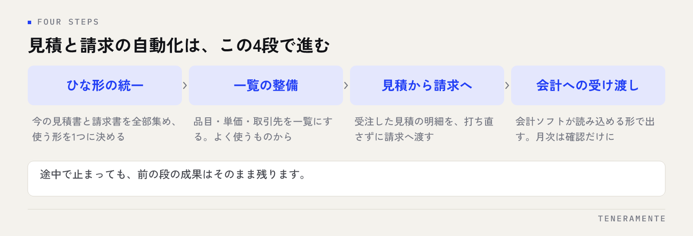

見積書を作ったあと、受注したら同じ内容を請求書に打ち直す。月末にその作業が何十件も重なる。結論から申し上げると、見積書・請求書の自動作成でいちばん効くのは、書類を作る手間を減らすことではなく、同じ内容を二度打つ場所をなくすことです。計算そのものは表計算ソフトでもできていて、時間とミスを生んでいるのは転記の部分です。この記事では、見積と請求を自動で作る仕組みに移すまでの順番を、依頼する側の作業として整理します。
📌 この記事の結論
自動化の前に決めるのは道具ではなく、品目・単価・取引先の持ち方です。この3つが書類ごとにばらばらに書かれている状態では、どんなシステムに移しても手で直す作業が残ります。見積の明細がそのまま請求の明細になる形を作れば、転記は構造としてなくなります。
01見積と請求が重いのは、計算ではなく転記の部分
見積書と請求書の作成が負担になっている会社で、実際に時間を使っているのは計算ではありません。並べると、作業のほとんどが情報を移す動作です。
前回の似た案件のファイルを探して開き、名前を付けて保存する。取引先の名称と住所を住所録から写す。品目と単価を過去の見積から拾う。受注したら、その内容を請求書のひな形に打ち直す。月末に請求の一覧を作るため、発行したファイルをフォルダから集めて金額を転記する。
この流れには、ミスが起きる場所が3つあります。
一つ目は、ひな形の使い回しです。前の案件のファイルを複製して作ると、消し忘れた行や前の取引先名が残ります。
二つ目は、単価の二重管理です。見積の単価を更新しても、別のファイルに入った古い単価は直りません。どちらが正しいのか、作った本人以外には分かりません。
三つ目は、集計のための再入力です。発行済みの書類から月次の数字を作り直すため、同じ金額を2回以上打ちます。手で作った書類を集計し直している作業があるなら、そこが自動化の入口です。Excel管理そのものの限界の見極めはExcel管理の限界はどこ？にも整理しています。
02自動化の前に決める3つの土台：品目・単価・取引先
見積と請求の自動化は、画面を作る前に決めることが3つあります。ここが決まっていない状態で道具を入れると、結局手で直すことになります。
一つ目は、品目の持ち方です。よく出す品目に名称を付け、一覧として1か所に置きます。同じ作業を「設置作業」「設置費」「取付」と書き分けている状態をそろえる作業がここに入ります。名称がそろうと、何がいくらで売れたのかを後から数えられるようになります。
二つ目は、単価の決め方です。定価が1つに決まる品目、数量で単価が変わる品目、案件ごとに見積もる品目の3種類に分けます。全部を一律に扱おうとすると、どちらの形にも合いません。案件ごとに見積もる品目は、計算のもとになる数量の単位だけを決めておきます。
三つ目は、取引先の持ち方です。請求の宛名、送り先、締め日と支払いの条件、担当者。書類ごとに書くのではなく、取引先ごとに1件持ちます。宛名の表記ゆれがここで止まります。
この3つを一覧として持つだけで、書類の作成は選ぶ作業に変わります。入力のほとんどは、選ぶと数量を入れる動作に置き換わります。
03自動化できる場面と、人の判断が残る場面
自動化の相談では、どこまで機械に任せられるのかが最初の論点になります。分けて考えると範囲が決まります。
機械に任せられるのは、決まった手順の部分です。書類番号の採番、取引先情報の差し込み、小計と消費税と合計の計算、税率ごとの区分、PDFの作成、送付の記録、見積の明細を請求へ引き継ぐ処理、入金の予定と実績の突き合わせ、月次の一覧の作成。ここは人がやっても結果が同じになる作業で、手でやる価値がありません。
人の判断が残るのは、金額と条件を決める部分です。値引きをどこまで入れるか、どの単価を適用するか、作業の範囲をどう書くか、支払いの条件を変えるかどうか。ここを自動で決めさせようとすると、現場が画面の外で計算してから入力する形になり、記録と実態がずれます。
その中間にあるのが、確認の工程です。発行前に誰が見るのか、金額がいくら以上なら承認が必要か。この部分は自動ではなく、順番と記録を決めておく作業になります。自動化の設計は、任せる作業と判断を残す作業の境目を文字にすることから始まります。
04進め方の4段：ひな形の統一→一覧の整備→見積から請求へ→会計への受け渡し
実際の進め方は4段に分かれます。この順番を守ると、途中で止まっても前の段の成果が残ります。

一つ目は、ひな形の統一です。今使っている見積書と請求書を全部集め、使う形を1つに決めます。この段で、記載が欠けている項目と、不要な欄が見つかります。
二つ目は、一覧の整備です。前の章の品目・単価・取引先を一覧の形にします。全件をそろえる必要はなく、よく使うものから始めて足していきます。
三つ目は、見積から請求への引き継ぎです。受注した見積の明細を、打ち直さずに請求へ渡せるようにします。ここが入ると、転記の作業が構造としてなくなります。分割して請求する案件は、どの明細をいつ請求するかを記録する形にします。
四つ目は、会計への受け渡しです。発行した請求の内容を、会計ソフトが読み込める形で出せるようにします。ここまでつながると、月次の作業は確認だけになります。
05道具の選び方：会計ソフト・販売管理・自社開発の分かれ目
見積と請求の自動化は、自社開発でなくても実現できる場合があります。判断を分ける材料を並べます。
| 見るところ | 会計ソフトの機能で足りる | 販売管理のサービスが向く | 自社開発が向く |
|---|---|---|---|
| 書類の形 | 標準の様式でよい | 標準の様式を少し調整したい | 取引先ごとに指定の様式がある |
| 品目の数 | 少なく、ほぼ固定 | 一覧として管理したい | 数量や条件で単価が変わる規則がある |
| 前後の業務 | 見積と請求だけで完結する | 受注や在庫までつなげたい | 自社固有の工程や審査が間に入る |
| 入力する人 | 経理の担当者が入力する | 営業も入力する | 現場や外部の担当者も入力する |
| 集計したい形 | 売上の合計が分かればよい | 取引先別・品目別で見たい | 自社固有の区分で見たい |
| 他の書類 | 見積と請求のみ | 納品書や発注書も同じ流れで出す | 自社様式の報告書や台帳と連動させる |
| 費用のかかり方 | 月々の利用料に含まれる | 使う人数と期間に応じて続く | 作るときにかかり、その後は保守 |
分かれ目は、書類の様式と単価の規則が標準に収まるかどうかです。取引先ごとに指定の様式があり、単価が条件で変わる規則を持っている会社は、既製のサービスの画面の外で計算することになりがちです。逆に、様式が自由で品目が固定なら、会計ソフトの請求機能から始めるほうが早く始まります。ひな形の管理から段階的にシステムへ移す考え方は契約書の作成を自動化する方法にも共通します。
06法令で外せない項目を先に確認する
見積書は様式が自由ですが、請求書は記載する項目に決まりがあります。仕組みを作る前に、今の書類に欠けていないかを確認してください。
消費税の仕入税額控除を受けるための適格請求書には、発行者の名称と登録番号、取引の年月日、取引の内容、税率ごとに区分した対価の合計額と消費税額、受け取る側の名称が必要になります。軽減税率の対象が混ざる場合は、どの品目が対象かが分かる形で分けて書く必要があります。要件の詳細は国税庁の案内で確認し、自社の書類に当てはめてください。
もう一つは、電子で受け取った書類の保存です。メールやダウンロードで受け取った請求書は、電子のまま決まった要件で保存する扱いになります。自動作成の仕組みを作るときは、発行した控えをどこに、どの形で、いつまで残すのかを同時に決めてください。
システム化を機に、様式と保存の両方をそろえておくと、後から全件を作り直す作業が発生しません。
07依頼する前に用意しておくものと、よくある失敗
開発や導入を外部に依頼する場合、次の材料がそろっていると見積もりの精度が上がり、やり直しが減ります。そのままチェックリストとして使えます。
- 今使っている見積書と請求書の実物（取引先ごとに様式が違うなら、その全種類）
- よく出す品目の一覧と、その単価の決め方
- 数量や条件で単価が変わる規則（計算の根拠が分かる形で）
- 取引先の一覧と、締め日・支払いの条件
- 書類番号の付け方（年度で戻すのか、連番で続けるのか）
- 分割請求や前受けがある取引の扱い
- 発行前の確認の順番と、承認が必要になる条件
- 月次で見たい集計の形（取引先別、品目別、担当者別など）
- 会計ソフトの種類と、取り込める形式
- 控えの保存場所と、保存の期間
よくある失敗は次の5つです。
今の様式をそのまま再現しようとする。長年使ってきた書類には、使われていない欄が残っています。統一の段で削る作業を飛ばすと、作る範囲が無駄に広がります。
品目の一覧を作らずに始める。品目を毎回手で打つ前提のまま自動化しても、表記はそろわず、集計もできません。
見積と請求を別の仕組みで作る。別々に入れると、引き継ぎができず転記が残ります。つなぐ部分こそが目的です。
例外の案件を最初から全部入れる。特殊な取引を最初の設計に全部含めると、公開が遠のきます。例外は手作業で残し、件数の多い取引から自動にしてください。
番号の付け方を後回しにする。採番の規則は後から変えると過去の書類と整合しなくなります。最初に決めて記録しておく項目です。
08自分で進める場合と、専門家に任せる場合の分かれ目
一般論として、判断の基準は3つあります。
一つ目は、単価と様式が標準に収まるかどうかです。品目が固定で、様式が自社の自由に決められるなら、既製のサービスを素直に使う判断が成り立ちます。取引先ごとの指定様式や、条件で変わる単価の規則があるほど、設定の工夫では収まらなくなります。
二つ目は、前後の業務とつなげる予定があるかどうかです。見積と請求だけで完結するなら、小さく始めて様子を見られます。受注、作業の進み、在庫、入金の管理まで同じ流れでつなげたいなら、最初の設計で道をふさがないほうが結果的に安く済みます。
三つ目は、業務の棚卸しを自社でできるかどうかです。品目・単価・取引先の一覧を自力で書き出せているなら、道具を選ぶ段からで構いません。書き出す段で止まるなら、整理そのものを相手と一緒にやる前提で相談したほうが早く進みます。
迷うときは、1年後にこの仕組みで何を見たいかを1文で書いてみてください。「請求書が早く作れる」までなら、既製のサービスで足ります。「どの品目がどの取引先でいくら売れているかが、月初に見えている」まで書けるなら、最初から設計を相談する価値があります。
09よくある質問
今使っているExcelのひな形を、そのまま使い続けられますか？
取引先ごとに請求書の様式が違います。対応できますか？
会計ソフトと二重に入力することになりませんか？
小さく始めるなら、どこから作るのが良いですか？
発行した書類の控えは、どこに置くのが良いですか？
10まとめ：転記をなくすところから始める
見積書・請求書を自動作成する仕組みは、順番が決まっています。今の書類を集めてひな形を1つに決める。品目・単価・取引先を一覧の形で持つ。任せる作業と判断を残す作業の境目を決める。見積の明細が請求へそのまま渡る形にする。会計ソフトへの受け渡しまでつなぐ。記載する項目と控えの保存を、作る前に確認する。ここまでやると、月末の作業は確認だけになります。
逆に、今の様式をそのまま画面にすると、入力の手間が変わらないまま道具が増えます。見積と請求の自動化は、書類を速く作ることではなく、同じ内容を二度打つ場所をなくすことで価値が出ます。業務アプリ全体の進め方は業務アプリ開発 完全ガイドにまとめています。
TENERAMENTEなら、この記事で挙げた「品目の一覧づくりで止まる」「見積と請求が別の仕組みのまま転記が残る」の2つを、進め方の側で外します。開発は3回のミーティングで要件を固める形を取っており、1回目に今お使いの見積書と請求書の実物を一緒に見ながら、共通で持てる項目と様式ごとに変わる項目、削れる欄を切り分けます。2回目に品目と単価の持ち方、見積から請求への引き継ぎと採番の規則を決め、お使いの会計ソフトへの受け渡しの形まで含めて範囲を固めます。最短2週間でのPoC（Proof of Concept、試作による検証）に対応しているため、件数の多い取引だけを先に自動にして、例外の案件は手作業のまま残す形から始められます。書類を探す時間と、同じ金額を二度打つ手間がそのまま減ります。開発の範囲と進め方はAI業務アプリ開発にまとめています。初回のご相談60分は無料ですので、品目の整理から迷っている段階でもお問い合わせからお気軽にご相談ください。